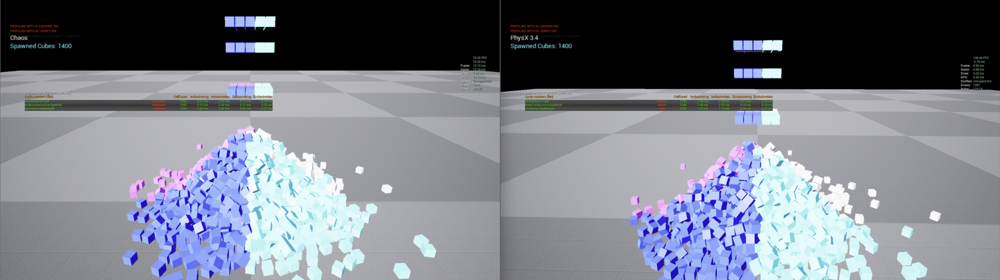

物理立方体基准测试
使用传统 PhysX Actor 进行刚体吞吐量测试。这是用于衡量实例化子系统的基准。

相同场景，并排捕捉 1400 个模拟立方体，Chaos（左）的帧率为 75.45 FPS，帧率为 13.25 毫秒；而 PhysX 3.4 的帧率为 148.44 FPS，帧率为 6.74 毫秒。
下载
测试内容
简单的刚体以常规方式进行模拟：每个刚体对应一个 Actor，每个 Actor 都有自己的组件、变换和节拍。它确定在标准工作流程下，帧预算耗尽之前可以模拟多少个 PhysX 刚体。
有趣的地方不在于这个数字，而在于它何时停止扩展以及原因。有两个成本会随着刚体数量的增加而增加，但它们的增长方式不同：
| 成本 | 随以下因素增加 |
|---|---|
| PhysX 求解器 | 实际接触且处于清醒状态的物体 |
| 参与者和组件开销 | 物体总数（无论物体是否移动） |
第二个问题是 PhysX 实例子系统所消除的。将此基准测试与实例子系统演示进行比较，即可直接看出差异。
运行它
首先 stat unit，然后：
| 命令 | 显示 |
|---|---|
stat physics |
求解器运行时间 |
stat game |
参与者帧数和组件开销 |
p.showConstraints 1 |
约束可视化 |
如果游戏开销远超物理开销，那么限制因素就在于参与者开销而非求解器本身，而实例化路径正是解决方案。
PhysX 与 Chaos
Vite 保留了 PhysX，而非迁移到 Chaos。在这种工作负载下，PhysX 速度更快、更可预测，这也是原因之一。请参阅 PhysX 文档。
如果您需要此类模拟具有与帧率无关的确定性，则可以使用 Vite 的可选固定时间步长功能——这需要使用 VITE_PHYSX_FIXED_TIMESTEP=1 重新构建。